Cursed Lands · local validation · 21 October 2026
Quest triggers and gameplay regression checks
The torch failure has a reproducible quest-state cause: a market refresh can erase a completed fortune before its waiting script copies the completion to the permanent quest flag. The repair runs that original bridge as the conversation finishes. The follow-up now covers all ten paid rumour branches across Suslanger and Gipat.
Scope: this report supplements the earlier regression pass. Changes are local and tested; this pass has not published a release or closed GitHub issues. “Original script” means the shipped campaign script executed in the remake. Native executable comparisons are labelled separately.
Open the visual fog audit · Final test results · Reproduced failures before fixes · Source and native-library fingerprints
The Portal torch
The fixture uses the original unlit torch beside the house and ladder in Portal (gz1h, object 2261640). The original paid fortune is skelet_fq2. Its permanent completion enables the torch; using the torch opens gz1d1. These remain separate actions.
Quest accepted, torch available
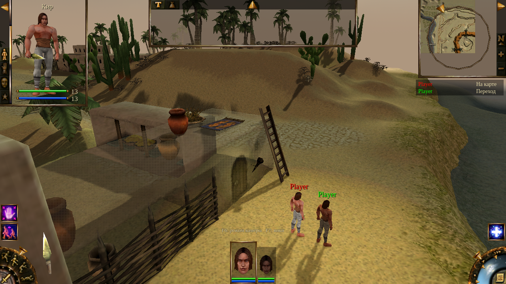
The actual viewport hit and hand-cursor state are asserted. The operating-system cursor is not part of the captured viewport image.After the original use action
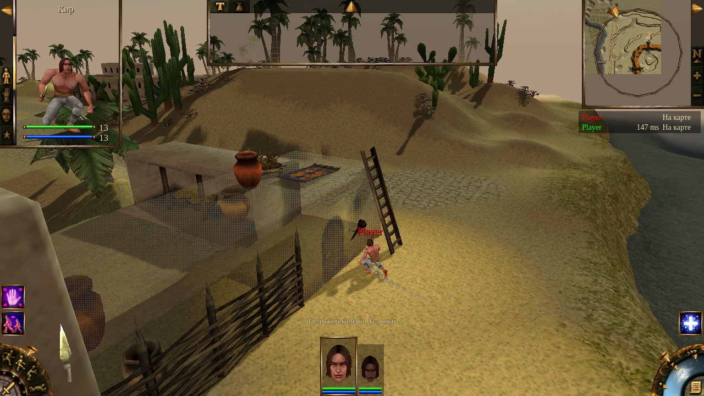
Real ENet command, original route and use animation, original entrance watcher. Unrelated combat is frozen in this focused fixture.34 co-op assertions pass: separate fresh one-shot worlds for host and client; locked picking before acceptance; enabled picking and the hand cursor; saved-zone snapshot import; walking/use; entrance activation; replication; no second activation. The 267 fortune assertions cover the five paid completions, separate purses, duplicate closes, persisted pending completions, modified-script exclusions and downstream time/quest gates.
The original basket still opens only in its midday interval; the undead gate still requires night. The dead-man and cave-lever events retain their original conditions. No entrance or quest reward is granted merely because the repair recognized a paid conversation.
Existing-save limit: a saved completion value of 2 is enough to recover a pending handoff. A value already overwritten to 3 is ambiguous—it also means a legitimately hidden offer. The code does not guess that a purchase happened. The supplied screenshot identifies the location, but is not a replay of the exact failed save.
Ten paid rumours, both players
The same investigation found a second cause: the original catalogue chooses its reply from player 0’s money when the catalogue is refreshed. That choice can already be stale when the host opens it, and cannot describe a client’s separate purse. The repair chooses the original success or failure response using the actual buyer’s current balance, both when opening the list and when selecting an offer.
The five Skelet offers still cost 50 each; the five Spletnica offers still cost 500 each. Their original prerequisites, replies and downstream triggers are retained. The Gipat crypt that was explorable without buying a hint remains explorable. Modified scripts or prices are excluded from this narrowly matched repair.
| Comparison | Result | Scope |
|---|
| Same 590 assertions before / after | 290 failures → 0 failures | Both buyers, unequal purses, stale success/failure replies and lost completion handoffs. Assertion counts overlap; these are not 290 separate bugs. |
| Expanded original-script checks | 804 assertions, 0 failures | Ten original offers; 40 settled traces compared with unadapted shipped scripts; refresh races, save/load, stale quest state, modified-script exclusions and downstream quest gates. |
| Real two-peer dialogue | 198 assertions, 0 failures | Actual ENet peers and topic buttons; opposite peer closes the dialogue; money changes before selection; immediate catalogue refresh; duplicate close; state and purse replication. |
The network fixture starts from the server’s topic-list event and advances the selected original dialogue and market scripts. It freezes unrelated combat and story activity; it is not a complete played approach to each merchant.
Other changes in this follow-up
| Area | Change | Evidence |
|---|
| Master Arhar | Choose the original success/failure response from the buyer’s current money when opening and selecting an offer. First-attempt purchases use the correct purse. | 43 assertions; 18 failures reproduced before the fix. |
| LiA co-op trade and portraits | Republish purse ownership when a story party changes ownership within the same zone. Cancel stale exchanges before that transition. | 11 assertions; five failures reproduced before the fix. Adjacent inventory transactions remain covered. |
| NPC walks toward the guest | Named protagonists such as Hero2, Jun and Shaina resolve to the player initiating the conversation. The merchant retains the authored second role. | 57 co-op assertions, plus neighbouring speaker, approach and pose suites. Genuine third companions and cage staging remain intact. |
| Dead eavesdrop speakers | Mark listening as failed and keep the rescue route available when a required speaker has been killed or looted. Do not pretend the conversation was heard or issue a completion reward. | 72 assertions against original successful traces and failure branches. Revival and reload cannot turn failure into success. |
| LiA strong-enemy rewards | Add one-time XP/loot to reviewed strong placements lacking rewards. The selection threshold is four levels above the local rewarded-enemy 75th percentile. | 5,088 placements audited in 40 game zones; 247 selected placements in 46 groups; 1,161 assertions. Reviewed additions and exclusions. This is an intentional addition, not original parity. |
| Alt body-part targeting | Choosing a body part keeps the targeting cursor until the next world click, including while auto-attacking. | 13 focused assertions, plus 74 adjacent direct-control checks. |
| Hold right-click to lower training | Repeat refunds with the same initial delay as raising a skill. Keep the captured perk family during list reflow; stop at zero, release, focus loss, hiding, mode or character changes. | 48 UI assertions and 39 co-op assertions; point-budget conservation checked. |
| Curse reveal | Retain the original relative height through map placement, SetCP, saves and snapshots. The creature stays below the floor until the original delayed reveal and effects. | Six executed original x86 placement observations; 51 reveal/ending assertions on Linux and Windows under Wine; native/scalar placement matrices on both. |
| Ending audio and loading | Hold background-audio suppression through the credits gaps; play the original credits track on the movie bus. Stop background simulation during the ending. Avoid reading full cached movie audio just to check conversion readiness, and skip conversion workers on headless hosts or with movies disabled. | 28 audio-sequence checks, adjacent movie tests and the reveal suite. Full cold-load latency on native Windows is still unqualified. |
| Disconnected client cleanup | Drop commands before retry preparation or RPC dispatch when the authority connection has already closed. Direct-control cleanup no longer emits a disconnected-peer error. | Reproduced during first/third-person teardown; the corrected 280-check run exits without engine errors. The separate local-host worker still passes 16 checks. |
| Console | Added money/XP, get/set/list/load variables, bounded command files, typed original-style expressions, basic GodMode, posture and clock controls, lever/trap controls, and party/quest queries. Campaign changes run on the host authority. | 96 interface/command assertions; 98 additional assertions for each campaign; five additional host-worker authority/replication assertions. Rendered EN/RU/DE help layouts. help lists the supported commands. |
| Finished item names | Use the authored finished-item name before the generic crafting-family title, including the extra-heavy club. | 380 base and 464 LiA checks; native and standalone web interfaces checked in EN/RU/DE, including Back and reload. |
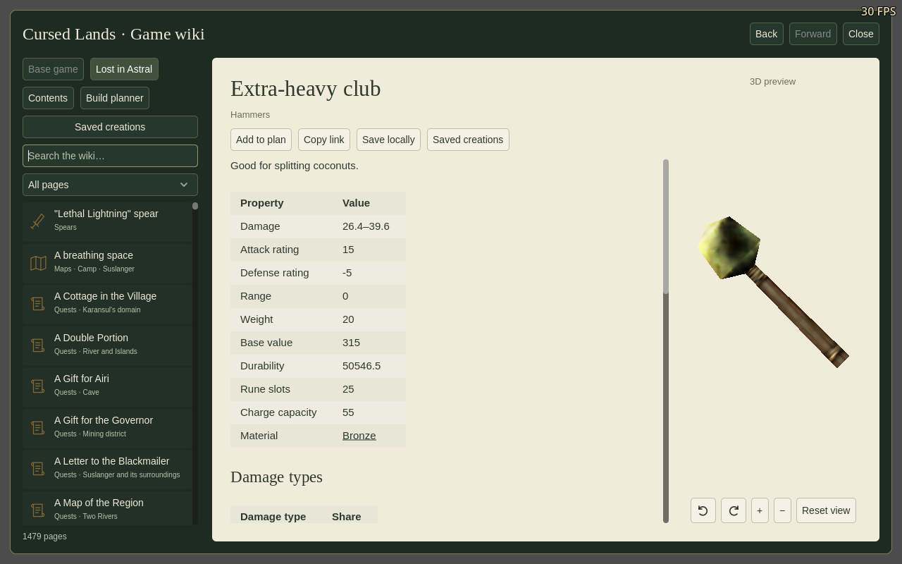
Console: original executable comparisons
@GodMode(0,1) enables the original basic damage immunity and running without stamina cost; @GodMode(0,0) disables it. It does not heal wounds, refill stamina, remove spell costs, or bypass load and leg-injury restrictions. The flag survives saves and replicates from the host authority. The original enhanced attack mode 2 is not implemented and is rejected.
54 observations from the two original executables cover command dispatch, running admission, running stamina use and damage acceptance. These are bounded x86 replays in Unicorn with explicit actor/lookup/refusal/notification boundaries, not a full Windows playthrough. The remake tests also exercise real body-part and load state, save/load, unsupported arguments and guest authority. The adjacent recovery and spell-wait suites pass another 80 assertions with GodMode disabled.
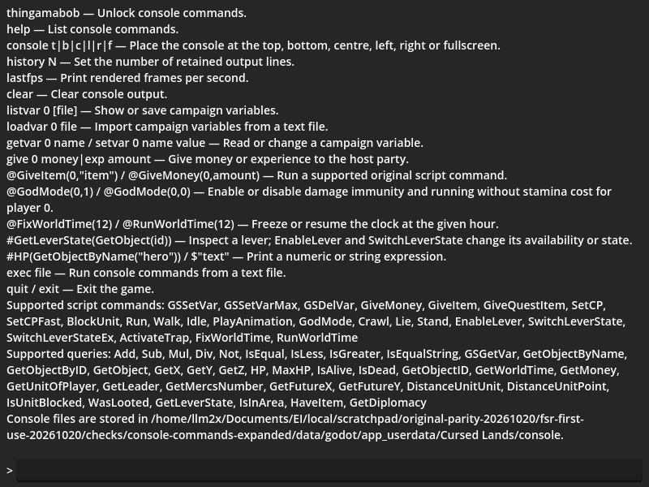
EN/RU captures include a small viewport; long help wraps and scrolls. Command identifiers keep their original syntax; explanations are localized.
Non-damaging spells and ally warnings
Stench, Stun, Weakness, Feeblemind, Slow and Shrink now notify the target’s AI through the existing attack-response path. A non-friendly target gains individual hostility and can warn nearby allies. This restores the branch present in both original executables; it does not add damage or a hit animation.
480 bounded x86 observations cover all 40 spell indices with enemy, neutral and friendly targets, missing caster/target and a non-creature object. The remake comparisons exercise the applicable non-damage dispatch paths, including retained creature corpses. Damage, taming and other special paths have separate tests. The original notification call is an observed boundary; native hostility selection and writes execute directly.
| Same assertions before / after | Result | Scope |
|---|
| 313 dispatch assertions | 30 failures → 0 | Six missing notifications and their hostility consequences; overlapping assertions, not 30 distinct bugs. |
| Eight authored encounter assertions | 3 failures → 0 | Gipat rat group, normal learned Stun cast and specifically its help call. With old dispatch, the ally keeps wandering. |
| Expanded dispatch comparisons | 409 assertions per campaign/platform, 0 failures | Base and LiA data on Linux and rebuilt Windows under Wine; includes no-caster and retained-corpse checks. |
The encounter uses the original gz5g rat placements. The prepared hero has a usable range-modified Stun and begins outside both rats’ initial perception. The target sends a warning at simulation time 1.540 s; its ally receives it at 3.025 s. The original queue starts at 26 and fires after 27 AI updates, when the counter becomes negative. The fixture freezes unrelated quest scripts, retains live NPC movement and checks that the warned ally investigates or fights. It does not replay the full original executable or prove every aspect of issue #64 is resolved.
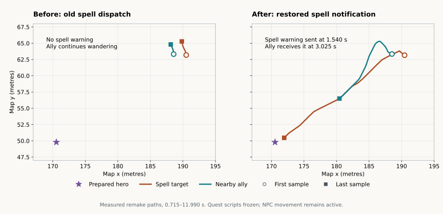
Top-down paths from the remake fixture, with unchanged authored rat placements and a prepared hero. Both panels show remake runs; this is a trace plot, not an original-game screenshot. Fixed trace · Before trace · Source comparison
Enlarge and Shrink
Both spells sent their visual event but omitted registration of the lasting effect. They now use the existing effect lifecycle, so the figure changes size, recasting refreshes its duration, and expiry restores its normal build. The saved base build and combat statistics remain unchanged.
64 native registration observations compare both executables, including adjacent Strength/Weakness cases and target/duration boundaries. The same 143 remake assertions went from 52 failures to zero, and pass for each campaign on Linux and Windows under Wine. They exercise actual casting timers, live human/creature figures, non-compounding recasts, opposite effects and serialized client updates. Snapshot round trips are not a separate ENet run.
Before/after results · Native evidence provenance. Adjacent repeated-spell, damage/witness and real ENet spell-requirement suites pass another 123 assertions.
Objective chains: brief sightings and save/reload
The compact side-quest evaluator polled once every half-second. The original generator emits ordinary script threads, which check their conditions each 55 ms logic tick. A sighting or area contact between those slower polls could disappear without advancing the journal. The evaluator now runs each logic tick and still advances only one objective at a time.
Completion also now uses the same QuestComplete path as an explicit script call, including its single-player shop-restock notification. Previously the compact evaluator bypassed that notification. Empty chains now reach their generated completion step too; the sixteen-objective limit is covered.
| Comparison | Before → after | Scope |
|---|
| 650 identical chain assertions | 272 failures → 0 | 26 authored base-game side-quest chains, empty/16-step boundaries, save/restore after every step, and one-tick sightings/area contacts. These are repeated manifestations, not 272 separate bugs. |
| 13 identical loaded-map assertions | 2 failures → 0 | Actual z3q2 toad quest: sighting, full campaign save/reload, death, completion and pending reward. Hero start and fatal hit are controlled inputs; map, perception and script startup are real. |
| Save during objective registration | 14 assertions, 0 failures | Empty and nonempty chains retain unfinished QStart/QFinish setup through reload. Old empty records without completion evidence remain pending. |
| Rebuilt Windows under Wine | 677 assertions, 0 failures | All three new suites pass in the exported executable. This is not native Windows hardware qualification. |
In the loaded-map trace, the old evaluator advanced the sighting two logic ticks after it was observable; the fixed evaluator advanced it on the first sampled tick. A separate controlled one-tick contact test demonstrates the missed-event case. Death completion also reaches its two sequential script steps after reload.
Empty-chain support also preserves registration paused by a script wait: saving between QStart and QFinish does not complete the quest or lose later objectives. The new registration test caught this boundary while developing the fix; it is not counted as an additional previously shipped regression.
28 native-generated chains / 98 objective records · Native analysis evidence · Before/after results · Exact source comparison · Chain traces · Loaded-map trace.
Comparison boundary: original x86 code chooses and links the generated conditions and journal/completion calls. String storage/formatting are supplied by the capture harness; the native compiler and whole original game are not executed. The captured source then runs through the remake parser/scheduler with controlled inputs. LiA has no installed .mq chains, so these are base-campaign tests. LiA's separate original-script quest-gate suite (267 checks) and two-player paid-rumour suite (198 checks) still pass after the shared VM change.
Mechanism permission: use, script reset and reload
Both original executables keep interaction permission separate from the mechanism’s visual state. Successful use consumes permission; a failed skill check leaves it available. SwitchLeverState changes the pose without restoring permission. EnableLever explicitly restores it, even at the last pose. The remake now follows that contract and sends permission changes to the other player.
The earlier implementation never consumed this permission on successful use. A later workaround hid the hand at the final pose. That made a used chest clickable again after a script closed it, while an explicitly re-enabled terminal mechanism stayed unclickable. The lock tooltip used the same pose shortcut and now follows the actual permission too.
| Comparison | Before → after | Scope |
|---|
| 240 native-reference assertions per campaign | 52 failures → 0 in each | 160 eligibility inputs and successful/failed use, reset, explicit re-enable and disable sequences, including saved-row imports. |
| 32 actual LiA chest assertions | 10 failures → 0 | Original gz11g OgreChest1 and OChest#1; both players click, walk, use, receive the authored reward, wait for closure and reload the co-op save. |
| Rebuilt Windows under Wine | 512 assertions, 0 failures | Both campaign comparisons and the actual ENet chest test; the chest scene uses Direct3D 12. |
The map fixture resets the chest between the two independent operator cases. Each original script awards 100 gold and closes the chest after its authored 40-tick wait. With the old code both peers then offer the hand again; with the fix both keep it unavailable, including after full save/reload. The subsequent explicit-enable case is a controlled permission boundary, not an added chest reward.
Unused and available
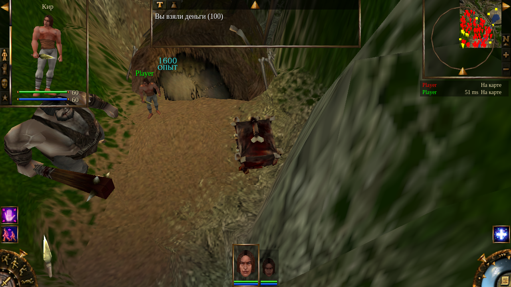
The chest is reset for this operator; the prior host trial’s reward may still appear in the message log. Both peers’ actual picking and hand state are asserted.Used, rewarded and closed
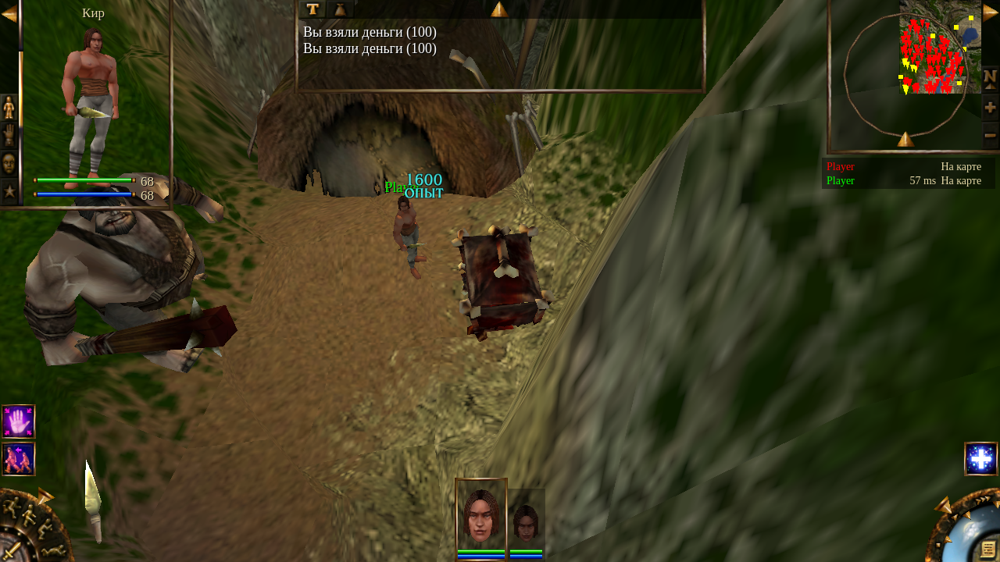
A closed pose does not mean unused. Both peers now retain consumed permission. The operating-system cursor is not included in these viewport captures.Before/after results and native scope · 400 selected native observations across both executables · Old chest trace · Fixed chest trace · Exact source comparison · Map inventory and authored chest script · Base native evidence · LiA native evidence.
Adjacent checks pass for both Portal-torch operators, repeated Catacombs lift trips and the five-rider ENet save/reload, ordinary gate animation and fast drawbridge timing. The remake’s intentional lift-recall extension remains a narrowly identified exception. The map inventory covers 291 base and 1,595 LiA mechanisms; it is not a played campaign audit. An earlier test encoded the same incorrect terminal-pose assumption and has been replaced with the captured native contract.
Save compatibility and comparison limits: new saves tag exact permission separately from animation metadata. Untagged older saves conservatively keep previously exhausted terminal mechanisms exhausted. Earlier saves cannot reveal whether a cycled or script-reset mechanism was already used; this change does not invent that missing history. Native comparisons execute the relevant original x86 routines with documented skill/world/render boundaries supplied. The full original UI and scene are not replayed by this test.
Movement-speed bytes: another original-code mismatch
Both original executables store the scaled movement value as a 32-bit float before rounding it to an integer byte. The remake rounded the higher-precision value directly. At some half-integer boundaries this chooses the adjacent byte. The correction reproduces both float stores and the original unsigned upper clamp.
| Example: authored banshee crawl speed | Old remake | Original and corrected remake |
|---|
| Scaled value before integer rounding | 8.50000044 | 8.5 after float32 storage |
| Packed speed byte | 9 | 8, ties to even |
The authored corpus includes 51 base and 105 LiA race rows. The mismatch appears in two base banshee rows and four LiA banshee variants. The remaining cases exercise rounding boundaries and limits. Each executable supplies 1,697 native observations; each remake suite makes 15,273 assertions over gaits, turning and overload. 2,316 failing assertions per campaign before the correction become zero on Linux and rebuilt Windows under Wine. They are repeated manifestations of this packing mismatch, not thousands of different bugs.
The native prefixes execute without hooks, including LiA’s original float-to-integer helper. Repeating the capture produces the same fixture byte for byte. The input includes an already-computed movement/wound factor: this comparison does not replay injury calculation, terrain, routing, animation or an entire original game session. Adjacent gait-animation and stamina checks also pass.
Before/after results and authored differences · Native observations · Exact source change and package hashes · Base machine-code evidence · LiA packing evidence · LiA rounding helper.
LiA mine: correct map, remaining uncertainty
The video attached to issue 47 shows LiA quest clues: “Полное ведро”, “Дерево жизни” and “Домик в деревне”. The installed campaign identifies this mine as gz24k, using zone24.mpr/mob. Earlier generic gz14k testing covered the base Forbidden Catacombs and did not qualify this report.
The loaded LiA mine checks keep its authored actors and scripts running through the real authority process. The same prepared save runs at 60, 20 and 10 frontend FPS, at normal and accelerated game speed. The party extension saves and restores all three heroes, issues a single group move, and measures each member’s distance, stamina use, stop/recovery and absence of combat damage.
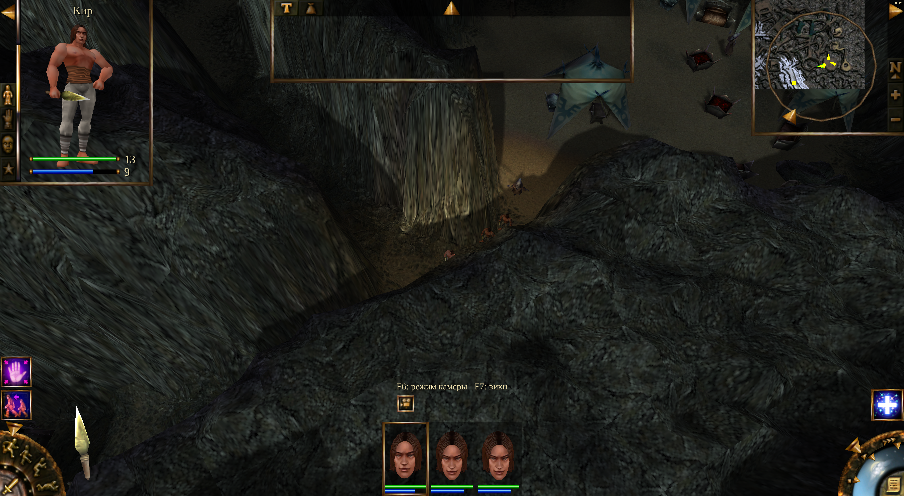
The prepared three-character party on the actual LiA mine map. Captured separately from the qualified timing run: PNG readback/encoding itself blocks the frontend. This is not the reporter’s save or an original-game capture.
| Run | Actors | Normal clock | Accelerated clock | Moving per simulation second | Assertions |
|---|
| Linux / one hero, before packing correction | 63 | 0.978–1.019× | 2.022–2.156× | 4.60–4.68 m/s | 55 / 0 failures |
| Windows D3D12 under Wine / one hero | 63 | 0.990–1.029× | 1.986–2.111× | 4.55–4.67 m/s | 55 / 0 failures |
| Linux / three heroes | 65 | 0.988–1.038× | 2.047–2.081× | 3.98–4.70 m/s | 133 / 0 failures |
| Windows D3D12 under Wine / three heroes | 65 | 0.989–1.018× | 2.048–2.094× | 4.02–4.69 m/s | 133 / 0 failures |
Clock ranges include moving and idle intervals; snapshots introduce sampling error. Accelerated solo speed targets 55/27, approximately 2.037×. Measurements, exact map and test provenance. Excluded setup errors are recorded separately.
Not reproduced: the reported severe mine slowdown. The speed-byte correction does not explain it. These tests use a prepared route, fresh healthy heroes and original-look graphics; they do not establish equivalence to the reporter’s saved party, exact passage, wounds, equipment or graphics workload. No fix for issue 47 is claimed.
New mine video: CDoorY gate identified
The new approximately 16-second phone recording matches CDoorY, object 4306, near (129.515, 135.658) in gz24k: the gate, plate, green passage and adjacent water agree. The user is forwarding someone else's report and has no additional save, version or reload information. Animation with little apparent displacement is visible, but the clip has no readable FPS or simulation clock.
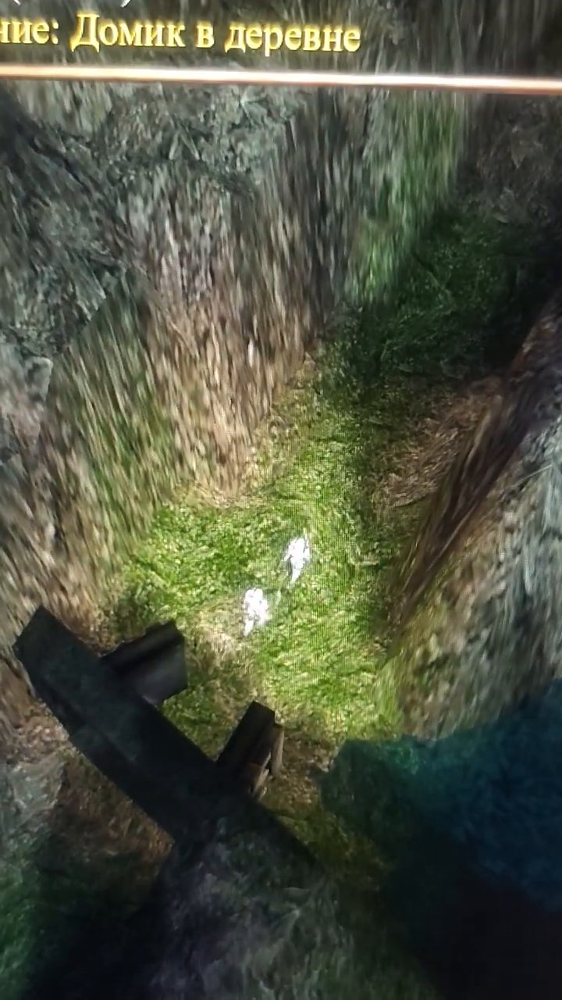
Supplied recording, approximately four seconds in. Camera movement is not character displacement.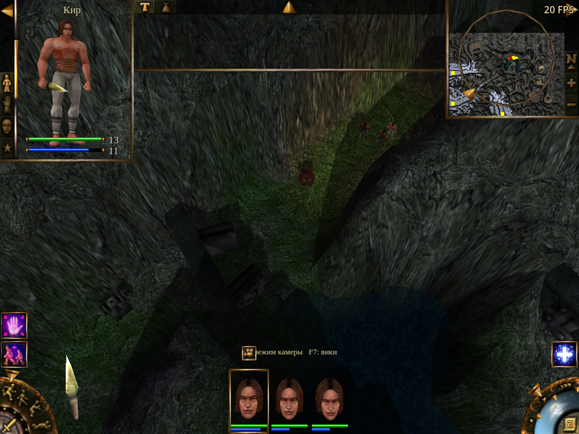
Prepared party after crossing the same gate in Windows D3D12 under Wine. The reporter's party and saved state are unknown.The new rendered fixture checks three distinct party records through full save/load, the separate solo authority, group and follow orders, normal and accelerated time, and a 20 FPS frontend cap. It measures actual model-animation progression, replicated positions and displayed positions separately. All 62 authored actors and scripts remain loaded; hostility is neutralized and the gate is opened as controlled setup. Earlier three-hero timing checks did not assert distinct restored start positions; this fixture does.
101 movement/setup assertions pass on each platform. Windows D3D12 under Wine exits without engine errors. Linux OpenGL exits 0 after its assertions but emits two 349,524-byte GL texture-leak diagnostics at shutdown, including after explicit test cache cleanup. Linux is retained as movement evidence with an unresolved renderer diagnostic, not a clean overall pass. No causal connection to the reported slowdown is established.
Still unreproduced: the severe slowdown. No production source or binaries changed in this follow-up. Fresh party state, original-look graphics and neutralized combat do not qualify the reporter's equipment, wounds, spell effects, saved script state or machine. Detailed evidence and reuse instructions · Video and source provenance · Linux measurements · Windows measurements · Excluded and superseded setup attempts.
Trap spell placement: use the character’s actual movement predictor
The original GetFutureX/Y commands convert current tick + delay to a float32 value, round it to the nearest even integer and call the object’s future-position method. The remake instead rounded the delay and advanced along public path points at constant speed. Those points can include the start of the active curve; walking that list can even predict a position behind the moving character.
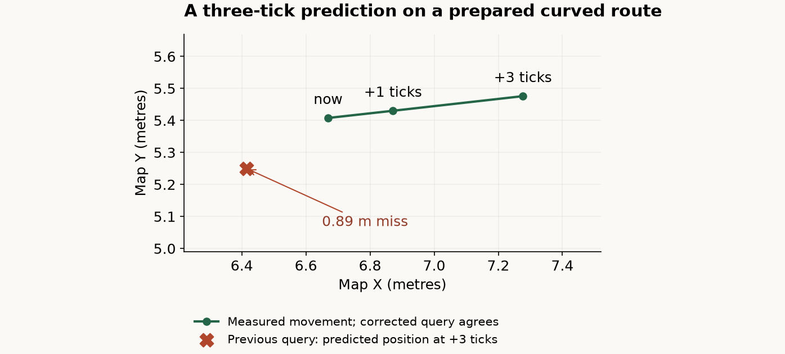
Recorded remake positions, not a screenshot of the original game. The route and terrain factors are supplied; the unit executes its real movement steps. Lines connect measured samples. The corrected query matches the measured position exactly in all 336 route preparations.
The repair uses the existing movement predictor, including the active curve, initial turning delay and per-node speeds. Stationary map objects retain their position. The console’s existing one-argument form keeps a zero delay.
| Evidence | Before | After | Boundary |
|---|
| Base suite | 660 failed assertions / 1,432 | 0 / 1,434 on Linux and Windows under Wine | 194 native dispatch cases; 336 movement preparations; 44 executions of eleven authored trap bodies |
| LiA suite | 616 failed assertions / 1,255 | 0 / 1,257 on Linux and Windows under Wine | 194 native dispatch cases; 336 movement preparations |
| Adjacent checks | First patch omitted the console’s missing-delay default | 98 base console + 98 LiA console + 172 prison states + 55 LiA trap checks pass | Two extra shorthand assertions were added to the final query suites |
The installed asset census covers 99 base maps and 130 LiA maps. Eleven base prison scripts in zone19.mob aim a fireball using a three-tick future position; all eleven now pass the authored-body fixture. No authored LiA use of these queries was found. This is not offered as an explanation of the separate LiA torch, eavesdropping or mine reports.
The two new campaign cases are registered in the regular gameplay catalogue. The catalogue audit also found that the previously added console tests and console authority command were missing from its feature inventory. Those entries are now included. All five registered programs pass through the normal isolated runner, and the complete authority-command mapping check passes. Catalogue execution results.
Both original interpreter captures execute original x86 instructions; the only substituted boundary supplies the object’s predicted point. A second capture is byte-identical. The route checks then compare the remake’s prediction to subsequently executed movement. These are separate evidence layers: they do not establish full original-spline, dynamic-collision or whole-scene equivalence. The repeated assertion counts are not a count of distinct bugs.
Before/after observations and asset census · Native dispatch observations · Exact change, history and package hashes · Base dispatcher evidence · LiA dispatcher evidence · Base movement-call evidence · Base unit method disassembly.
Scripted night scenes: keep quest timers and client daylight consistent
Both original executables keep the scene’s hour separate from elapsed campaign time (gtime). FixWorldTime(0.3) freezes the scene at 00:18; it does not rewind the campaign timer. The remake changed the same day/hour pair used to derive gtime, so scene resets also changed quest timeout inputs, the travel calendar and saved elapsed time.
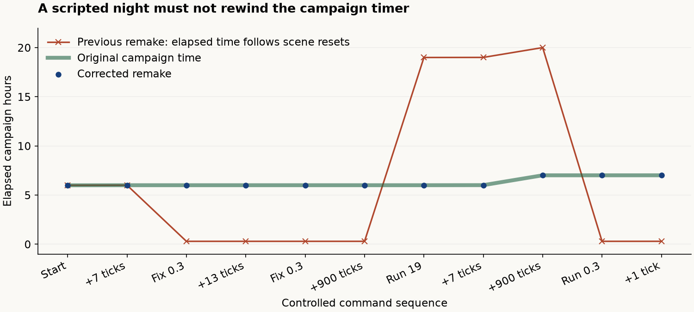
Recorded original subsystem execution versus remake VM execution. The command sequence and tick advances are supplied. This is a plot of measured clock values, not a screenshot or a full original-game playthrough.
The repair stores elapsed campaign time separately, retains it in saves, co-op progress and world contexts, and displays that clock on the travel calendar. Old saves without the field preserve their available day/hour value; hours already lost by an older build cannot be reconstructed.
A real two-player test of the installed LiA cz1h scene also found that guests advanced daylight while the host’s clock was frozen. Freeze/resume changes now carry both the hour and the frozen state immediately; periodic state and full reloads preserve that state too.
| Check | Before | Final result |
|---|
| Original clock commands, campaign time and saves | 396 elapsed-time/save assertion failures per campaign | 1,408 checks per campaign pass on Linux and rebuilt Windows under Wine |
| Installed LiA prison scene, ENet and full reload | Guest drift before/after load; resume waited for a state refresh | 17 checks pass on Linux and Windows under Wine |
| Corrected original time predicates and authored conditions | Earlier fixture selected night intensity instead of the hour | 122 base cases / 1,426 observations and 221 LiA cases / 3,288 observations match; both captures repeated twice |
| Adjacent behavior | — | Ten travel, campaign transport, co-op progress and rendered preview programs pass |
The reference test needed a repair too. Native GetWorldTime is opcode 0xb5; the previous fixture used 0xaa, which reads night intensity. It supplied an hour to that unrelated field, allowing the comparison to pass without testing the real clock. The corrected fixture initializes the native world’s tick, rate and offset and executes the actual hour query. New setter captures execute the original interpreter and campaign-time updater, supplying only player storage and omitting rendering/network callbacks.
The installed-map census finds eleven LiA scripts that freeze or resume the scene clock. The actual cz1h body, save/load and both peer clocks are exercised here; the remaining scenes are represented by their command/condition inputs, not claimed as complete playthroughs. Scene-hour comparisons allow a circular 0.00002-hour tolerance at midnight; campaign-time observations and all raw values remain in the downloadable traces.
Before/after traces · 792 native clock observations · Base predicate report · LiA predicate report · Registered tests and adjacent checks · Exact changes, history and limits · Base binary evidence · LiA binary evidence.
Clock writes, map entry and full reload
Campaign time and scene lighting stay independent when a script or console command writes gtime. Clearing that variable now clears its saved value and GS-table entry too. Ordinary map entry sets the hour from campaign time modulo 24; a revisited map keeps its stored freeze state. A full gameplay save reload keeps the saved scene hour.
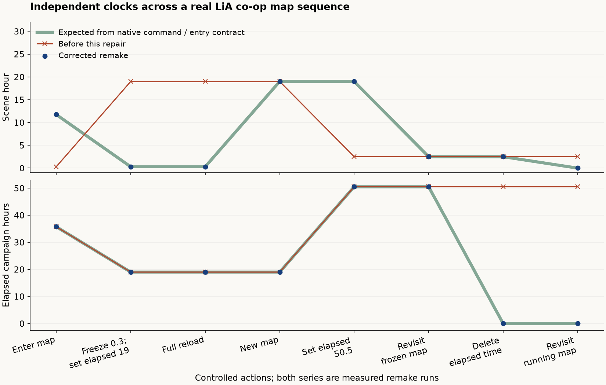
Actual remake host traces through two loaded LiA maps, a full reload and two revisits. The guest is checked at each step. The green reference uses bounded native command/entry captures and loader analysis; it is not a recording of a complete original-game journey.
| Same checks before / after | Result | Coverage |
|---|
| 1,152 assertions per campaign | 160 failures → 0 | Native GS set, set-to-maximum and delete; running/frozen scene, midnight/negative/zero/multiple-day values, GS presence and saved values. |
| 62 assertions per campaign | 15 failures → 0 | Actual maps, two ENet peers, fresh entry, scene freeze, independent writes, full save/load, saved-zone revisits and deletion. |
| Rebuilt Windows export under Wine | 2,428 assertions, 0 failures | Both new suites in both campaigns. |
| Adjacent clock, console, save and travel behavior | 3,019 assertions, 0 failures | Nine additional Linux programs, including the authored LiA prison freeze and guest daylight checks. |
The native reference contains 576 observations from both executables and repeats byte-for-byte. It executes the real interpreter, GS table and hour calculations. Original map loading is outside this replay: the exact post-load hour handoff is captured separately, while complete map transitions run in the remake. GSSetVarMax is verified at opcode 0x98 with observed entry into its native function; an initial capture using 0x81 was discarded and the baseline rerun.
The archive census scans 37 base-game and 72 LiA map entries. It finds clock calls in 51 and 200 script records respectively, including 81/266 scene-hour queries. No direct gtime writes or deletes were found in those installed map bodies. The command fixes therefore should not be presented as proven causes of a specific authored quest failure; the map-entry correction supplies the hour used by those quests.
Origin: write/delete behavior already existed in the October 2 implementation, before the mod merge. The map-entry reset completes the preceding local clock separation and was caught before publication. Town-save reconstruction is qualified by the following check. Legacy LMP switching and an uninterrupted original campaign remain outside these fixtures.
Before/after traces · Registered checks · Exact changes and limits · Base script census · LiA script census · Base binary evidence · LiA binary evidence.
Town reloads and waiting quest scripts
Both original executables send field maps (type 0) and towns (type 2) through the saved mission loader. The global map (type 1) takes ordinary zone entry. A full town reload therefore keeps its saved scene clock and script position. This audit found the current remake follows that contract; no additional production change was needed.
| Saved state | Before reload | After reload | Continuation checked |
|---|
| Frozen town clock | Scene 0.3 h · campaign 19 h | Scene 0.3 h · campaign 19 h | Freeze state retained on host and guest. |
| Running town clock | Scene 22.75 h · campaign 50.5 h | Scene 22.75 h · campaign 50.5 h | Full reload does not apply the ordinary map-entry reset. |
| Gipath quest deadline | Waiting below 47 elapsed hours | Same pending condition and poll | Still waits at exactly 47; advances once above 47. |
| LiA fire-lighting delay | 6 of 30 script ticks elapsed | Same frame and 6 elapsed ticks | Waits through tick 29; starts the next authored routine at tick 30. |
| Completed hire dialogue | Completion flag 2 for each player | Completion flag 2 preserved | Deployment does not replace an unconsumed completion with an available-topic flag. |
178 assertions pass: 46 base-game and 43 LiA checks on Linux, repeated in the Windows export under Wine. Both tests load real towns, save and reload twice, and check delivery to the second ENet peer. The tested script bodies match the installed original map archives.
The six native branch cases repeat byte-for-byte. Execution stops before file I/O; this is a loader-route comparison, not a full original save replay. Quest conditions and partial sleep are controlled inputs to the unchanged authored routines.
Negative control: a separate source copy deliberately resets the hour during full load and recalculates away completed hire flags. The same tests reject it. These induced failures are excluded from the production failure list. Legacy LMP world switching remains outside this check.
Saved state, continuations and negative controls · Registered tests · Base loader analysis · LiA loader analysis.
Did the older mod branch overwrite fixes?
The inspected history does not support that explanation for these regressions. The formula-mod merge 4118bbc7 adds guarded formula hooks and failure handling; its first-parent changes do not replace the AI, direct-input, wiki, briefing or original map-script files involved here. The no-mod/formula suite passes 106 assertions. This does not prove every mod combination is safe.
| Symptom | Evidence-backed origin | Implication |
|---|
| Forgetting a ranged attacker | 0bb29c2e, October 20, added the patrol-escape retention rule. Restored in 9ea1563d. | A gameplay change before the formula merge; original retention comparisons caught the difference. |
| E loses friendly self-cast | f2bad5e8, October 19, changed interaction dispatch. Restored in 9ea1563d. | An input-priority regression, not overwritten mod data. |
| Finished item gets a family name | The affected family-title logic was already present in 0dc3b47e, October 16. | A wiki naming rule needed a finished-item exception. |
| Non-damaging spells do not provoke | 862032c97, October 5, introduced the affected unit-cast dispatcher without the original notification branch. | An earlier implementation omission, not a mod-merge overwrite. |
| Enlarge / Shrink do not change size | 5ceae2fe, October 2, already sent their visual events without registering their lasting effects. | Presentation support existed, but casting never activated it. |
| Side-quest objective timing and completion | 5ceae2fe, the first remake release, already checked these objectives at half-second intervals and bypassed the explicit completion path. | An earlier implementation omission; not introduced by the mod-data merge. |
| Used mechanisms reopen; explicit enable stays hidden | 7038f5da, October 2, introduced the use handler without consuming permission. 0dc3b47e, October 16, added the terminal-pose gate. | An omission followed by an incomplete workaround, both before the mod merge. An older test repeated that assumption; original executable comparisons now supply the reference. |
| Scripted clock resets / guest daylight drift | 5ceae2fe, October 2, already coupled campaign time to the scene hour and advanced client daylight unconditionally. | Predates the mod merge. The time comparison also contained an incorrect native opcode; it is now corrected and expanded. |
| Trap future-position approximation | 7038f5da, October 2, already used constant-speed path points and rounded the delay separately. | Predates the mod merge. The fix routes queries through the movement predictor and matches native absolute-tick conversion. |
| Movement byte differs at rounding boundaries | 5ceae2fe, October 2, already rounded the double directly instead of storing the scaled float32 first. | An original reconstruction mismatch predating the mod merge. Both executable captures now cover the rounding boundary. |
| Merchant / guest dialogue / torch | Shared original single-player flags, protagonist names and delayed script watchers interact with co-op purses and timing. | Test the whole action sequence and both owners; isolated handler success misses these failures. |
| Narrow map-border fog | 7aa520e9, October 6, introduced the 16 m quadratic profile. | An earlier intentional visual change. The matched fog audit documents the remaining visual trade-off; production fog is unchanged. |
Additional dialogue and stealth checks
The Zako fixture now follows the ordinary interaction command, topic selection, actor staging and conversation close. It covers both players as initiator and closer, classic and modern cameras, and a conversation interrupting the other player's journal. Actual zoom and rotation are checked after closing. The Linux run passes 248 assertions; the Windows build under Wine with Direct3D 12 passes 250, including two rendered captures. Another 280 checks cover first- and third-person mouse look, either initiator/closer and journal interruption. These checks have not reproduced the reported freeze.
Guest starts the Zako topic
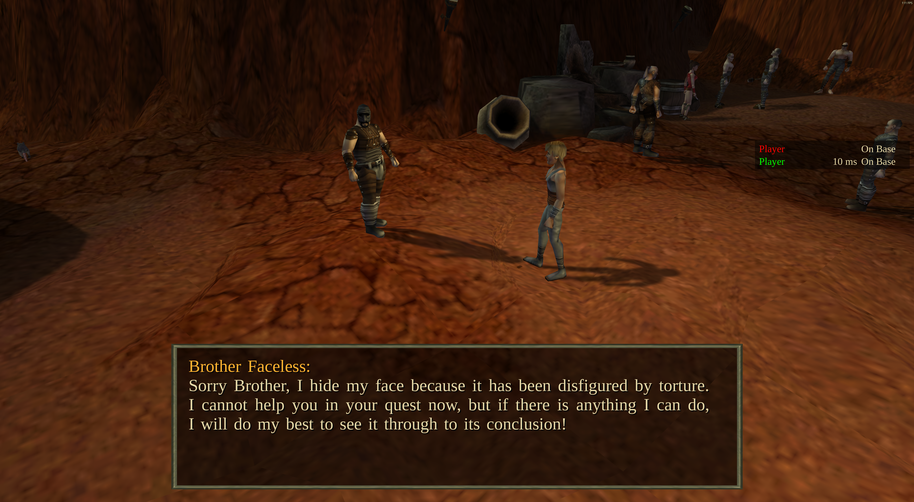
The actual staged S64 conversation on the host.Host closes and moves the camera
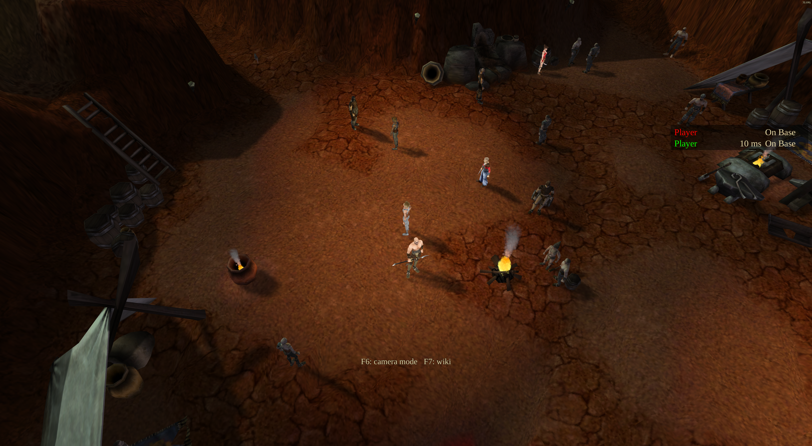
The host's normal view after the tested zoom and rotation inputs.The Portal eavesdrop map fixture adds 1,351 assertions over 588 position, day/night and posture samples. It loads the original quest actors and evaluates actual map occlusion and AI visibility. Host and guest outcomes match the unadapted original script under equivalent protagonist inputs. Hidden guests cannot complete the objective, and the listening/rescue flags reach the client. This is original-script comparison in the remake, not native executable playback.
The shipped audio/script audit finds no speech or briefing call in the listening branch, no such call in its added map script, and no placed conversation emitter at the house. The branch advances the objectives and later orders the NPC to walk. Generic unit or ambient sounds remain a separate question; the earlier native-game observation was muted.
Fixture diagnostics distinguish test-setup mistakes from game regressions. The qualified map run restores each one-shot area between comparisons and starts after the earlier prison escape.
Speed at low frontend frame rates
The reported running-speed clip shows about 20–25 FPS; the inspected frames do not establish precisely when the selected speed changes. The new fixture loads a full campaign map through the separate authority process, repeats the same saved route at 60, 20 and 10 frontend FPS, and measures wall time, authoritative movement, running stamina use and stationary recovery. Gipat measures steady movement; Suslanger includes command startup. Actors remain active; the Suslanger route stays away from combat.
| Run | Loaded actors | Normal clock | Accelerated clock | Assertions |
|---|
| Stock Linux Godot, headless / Gipat | 48 | 1.004–1.019× | 2.036–2.111× | 55 / 0 failures |
| Custom Windows D3D12 under Wine / Gipat | 48 | 0.997–1.039× | 2.034–2.114× | 55 / 0 failures |
| Stock Linux Godot, headless / Suslanger | 74 | 1.003–1.035× | 1.976–2.148× | 55 / 0 failures |
| Custom Windows D3D12 under Wine / Suslanger | 74 | 0.993–1.033× | 2.081–2.193× | 55 / 0 failures |
Clock ranges include both moving and idle intervals; replicated snapshots add sampling error. The original solo accelerated ratio is 55/27, about 2.037. Movement and stamina use per simulation second remain consistent across the tested frame caps, and stopped characters recover stamina. Measurements and recording provenance. These prepared maps and original-look settings do not reproduce the reporter's exact save, maximum-settings GPU workload or combat case. Issue 62 remains unqualified.
The stock Linux test engine lacks the custom animation-binding APIs. Its first Suslanger movement update took about 0.6 seconds; profiling attributed about 0.4 seconds of the initial tick to animation setup, with path queries taking only a few milliseconds. The custom Windows build exposes both preparation and retention APIs and delivered its first movement update in roughly 20–100 ms in this fixture. The earlier apparent 2.6–2.8× burst counted catch-up ticks but excluded the preceding startup delay; measuring from command submission restores the expected overall rate. The same-save diagnostic profiles measured the initial tick at 429 ms on stock Linux and 35 ms on the custom Windows engine under Wine; subsequent first-move ticks were about 8 ms on both. These are different engine/platform builds. This is an engine/test-window distinction, not an additional gameplay fix.
Clothing and equipment texture packages
Package APIs 1, 2 and 3 now accept redress.res MMP overrides alongside world textures, covering character skins, clothing and equipment (#66). The legacy converter accepts changed entries from the same archive. Existing archive readers, profile activation and cache clearing provide the rendering path; no source archive is overwritten.
The baseline rejected the package in all three API versions. The new fixture passes 42 checks in each of three runs: base campaign on Linux, LiA with OpenGL on Linux, and the exported Windows D3D12 build under Wine. It verifies actual character mesh material binding, high-resolution PNT3 decoding, transparent clothing layers, the reported weapon entry, conflicts and restoration after disabling the package. Existing texture-package and profile suites add 42 and 87 passing checks. The converter's 20 tests and the parity runner's 29 tests also pass; translation coverage reports no errors.
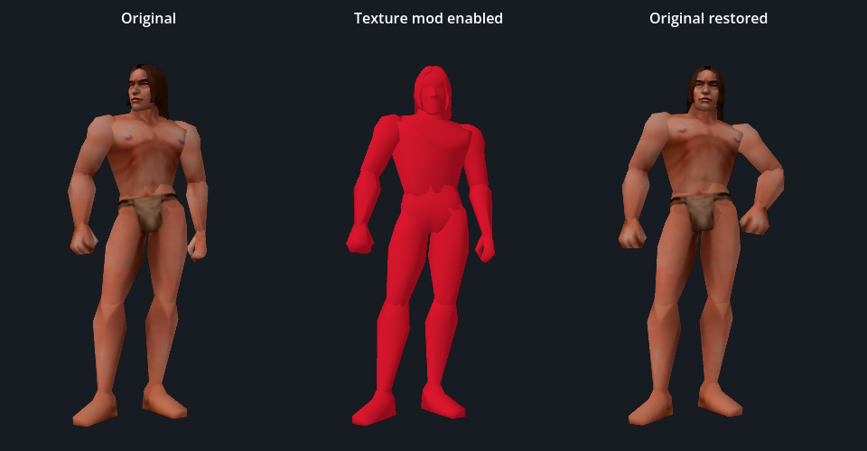
All three figures are rendered by the remake. Red is generated diagnostic artwork. The first and third composed textures are byte-identical; idle poses can differ. This demonstrates profile restoration, not a comparison with a running original executable.
Texture-only packages retain cosmetic co-op signatures. The fixture checks configuration compatibility; it does not claim a new live mixed-texture multiplayer test. Windows results are under Wine, and no Android-device or browser-export qualification is added here.
Windows D3D12 capture · Baseline failures, final results, scope and source fingerprints · Registered base/LiA tests and adjacent mod suites
Remaining uncertainty
- Host camera after Zako: not reproduced in the direct-conversation, host-worker or new complete topic-path checks above. No speculative camera fix is claimed.
- Audible eavesdrop dialogue: the original executable was observed advancing the objectives in normal gameplay without a separate dialogue window. The additional script/audio asset audit above found no authored speech at this step. Audible native playback remains unverified; no invented dialogue has been added.
- Shadows and blinking particles: the earlier shader-buffer exhaustion fix has evidence, but that does not establish that every reported maximum-settings Windows artefact is resolved.
- Exact reported scenes: the speed report #62, village camera report #61 and ally-alert scene #64 still need matching settings or whole-scene original comparisons. Passing focused checks is not a claim that these reports are fixed.
- Platforms: native helpers were rebuilt for Linux, Windows and Android ARM64. Windows tests here run under Wine; the Android rebuild has not been exercised on a device in this pass.
Validation record
Load checks.json for the per-suite results.
Counts include numeric boundary matrices and repeated platform runs; they are not a count of distinct player features or a claim of complete campaign equivalence. All development profiles use a free cursor, FPS display and muted audio. The code additionally passes translation coverage and whitespace checks.
Show final suites and their scope
To repeat a fixture from the repository, launch Godot with an isolated test profile, --path game -- --ei-path=<original installation> --no-movies --tool=<absolute repo>/tools/tests/<suite>.gd. LiA suites require the LiA installation. Rendered torch runs use --torch-player=0 or --torch-player=1. Do not run the LiA fixtures against the base campaign.